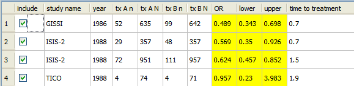

This section explains how to add covariates to a data set. Covariates are used for both meta-regression and subgroup meta-analyis.
A covariate can be of the following types:
To add a covariate to a data set,
The Open Meta-Analysis window now displays a new column labeled by the name of the covariate.

You can enter data for the covariate by clicking in the column and typing the values of the covariate, as shown in the example below.

 | Example - Diagnostic Data | Performing a Meta-Regression |  |